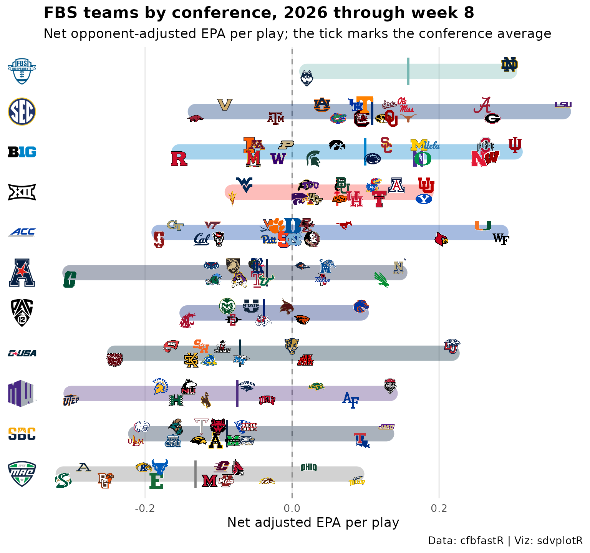
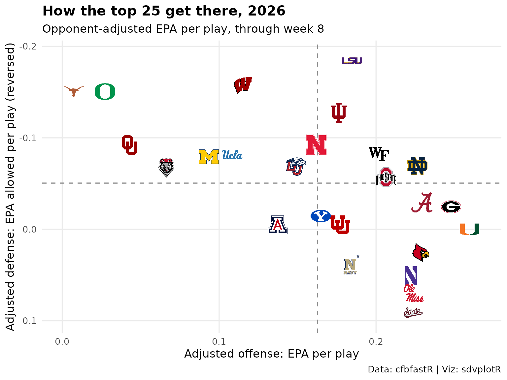

College Football Weekly Leaderboard
Saiem Gilani


Source: vignettes/leaderboard-cfb-weekly.Rmd
leaderboard-cfb-weekly.RmdOn this page
Updated 2026-10-12: the 2026 season through week 6.
This page is rebuilt every week with the site. It rates every FBS team by opponent-adjusted EPA per play, a simple cousin of SP+ built from the play-by-play, for the latest season with data: the season to date during the fall, the final season in the offseason. Data: cfbfastR play-by-play and CollegeFootballData.com schedules.
Picking the season
Week 0 is in late August, so before then the calendar points at last
season. cfbfastR::load_cfb_pbp() errors for a season past
its most recent one and warns, returning no rows, for a season whose
file is not up yet; either way the page steps back one season. The
schedule says whether regular-season games are left, which is what the
status line reports. It is a live API call, so it goes through
live(): if CollegeFootballData.com does not answer, the
page still rates every team from the play-by-play and leaves the records
blank for that week instead of failing the site build.
library(sdvplotR)
library(dplyr, warn.conflicts = FALSE)
library(ggplot2)
library(gt)
today <- Sys.Date()
# Week 0 is in late August, so before then the calendar points at last season
current <- as.integer(format(today, "%Y")) - (format(today, "%m") < "08")
# A season's play-by-play, or NULL when it is not published: load_cfb_pbp() errors
# for a season past cfbfastR's most recent one, and warns and returns no rows for
# one whose file is not up yet
play_by_play <- function(season) {
pbp <- tryCatch(suppressWarnings(cfbfastR::load_cfb_pbp(season)), error = function(e) NULL)
if (NROW(pbp) == 0) NULL else pbp
}
season <- current
pbp <- play_by_play(season)
if (is.null(pbp)) {
season <- current - 1
pbp <- play_by_play(season)
}
stopifnot(!is.null(pbp))
# A live API call, or NULL when the API does not answer: one bad week then shows
# a note instead of failing the whole site build
live <- function(expr) tryCatch(expr, error = function(e) NULL)
# CollegeFootballData.com's schedule (a live API: set CFBD_API_KEY, a free key)
schedule <- live(cfbfastR::load_cfb_schedules(season))
schedule_ok <- NROW(schedule) > 0
if (schedule_ok) {
played <- schedule |>
filter(completed) |>
arrange(start_date, game_id)
week <- max(played$week[played$season_type == "regular"])
left <- filter(schedule, !completed)
} else {
week <- max(pbp$week)
}
if (!schedule_ok) {
status <- sprintf(
"the %d season through week %d. CollegeFootballData.com's schedule was unavailable when this page was built, so records are missing this week; they return next week.",
season, week
)
through <- paste("through week", week)
} else if (any(left$season_type == "regular")) {
status <- sprintf("the %d season through week %d.", season, week)
through <- paste("through week", week)
} else if (nrow(left) > 0) {
status <- sprintf("the %d regular season is final; bowls and the playoff are under way.", season)
through <- "regular season and finished bowls"
} else {
status <- sprintf("the offseason, so this is the final %d season, bowls and playoff included.", season)
through <- "final"
}The play-by-play carries each game’s teams with their division and conference, which picks out the FBS teams. Records come from the schedule’s played games, against FBS and FCS opponents alike.
sides <- bind_rows(
distinct(pbp, game_id, week, school = home, conference = home_team_conference, division = home_team_division),
distinct(pbp, game_id, week, school = away, conference = away_team_conference, division = away_team_division)
)
fbs <- sides |>
filter(division %in% "fbs") |>
arrange(week, game_id) |>
group_by(school) |>
summarise(conference = last(conference), .groups = "drop") |>
# the index keys three conferences by their short codes
mutate(conference = recode(conference, "American Athletic" = "AAC", "Conference USA" = "CUSA", "FBS Independents" = "FBS Indep."))
if (schedule_ok) {
records <- bind_rows(
transmute(played, school = home_team, win = home_points > away_points),
transmute(played, school = away_team, win = away_points > home_points)
) |>
group_by(school) |>
summarise(record = paste(sum(win), sum(!win), sep = "-"), .groups = "drop")
fbs <- left_join(fbs, records, by = "school")
} else {
fbs$record <- NA_character_ # shown as a dash
}
nrow(fbs)
#> [1] 1381. Top 25 by adjusted EPA per play
The ratings use FBS-against-FBS pass and run plays, minus garbage time (a lead of more than 43 points in the first quarter, 37 in the second, 27 in the third or 21 in the fourth). One pass of opponent adjustment credits each offensive play for the defense it faced (that defense’s EPA allowed per play against the FBS average), and each defensive play for the offense it faced. Net is adjusted offense minus adjusted defense.
plays <- pbp |>
filter(
pass == 1 | rush == 1, !is.na(EPA),
pos_team %in% fbs$school, def_pos_team %in% fbs$school
) |>
mutate(margin = c(43, 37, 27, 21)[period]) |> # NA in overtime, which is never garbage time
filter(!coalesce(abs(pos_score_diff_start) > margin, FALSE)) |>
arrange(game_id, id_play) # a fixed order, so every mean sums the same way each week
avg <- mean(plays$EPA)
defense_allows <- plays |>
group_by(def_pos_team) |>
summarise(allowed = mean(EPA), .groups = "drop")
offense_gains <- plays |>
group_by(pos_team) |>
summarise(gained = mean(EPA), .groups = "drop")
adjusted <- plays |>
left_join(defense_allows, by = "def_pos_team") |>
left_join(offense_gains, by = "pos_team") |>
mutate(adj_off = EPA - (allowed - avg), adj_def = EPA - (gained - avg))
ratings <- inner_join(
adjusted |> group_by(school = pos_team) |> summarise(off = mean(adj_off), .groups = "drop"),
adjusted |> group_by(school = def_pos_team) |> summarise(dfn = mean(adj_def), .groups = "drop"),
by = "school"
) |>
mutate(net = off - dfn) |>
inner_join(fbs, by = "school") |>
# "Charlotte" alone is the 49ers or the Saints; the 49ers are the FBS team
mutate(key = sub("^Charlotte$", "Charlotte 49ers", school)) |>
arrange(desc(net), school) |> # the school breaks a tie, so an unchanged week renders the same
mutate(rank = row_number())
top25 <- ratings |>
slice_head(n = 25) |>
mutate(logo = key, conf_logo = conference) |>
select(rank, logo, school, conf_logo, conference, record, off, dfn, net)
head(top25)
#> # A tibble: 6 × 9
#> rank logo school conf_logo conference record off dfn net
#> <int> <chr> <chr> <chr> <chr> <chr> <dbl> <dbl> <dbl>
#> 1 1 Alabama Alabama SEC SEC 5-1 0.307 -0.0764 0.383
#> 2 2 Georgia Georgia SEC SEC 6-0 0.276 -0.108 0.383
#> 3 3 Notre Dame Notre Dame FBS Indep. FBS Indep. 6-0 0.257 -0.125 0.382
#> 4 4 Wisconsin Wisconsin Big Ten Big Ten 4-1 0.170 -0.188 0.357
#> 5 5 Indiana Indiana Big Ten Big Ten 6-0 0.240 -0.110 0.350
#> 6 6 Nebraska Nebraska Big Ten Big Ten 5-1 0.205 -0.123 0.327sdvplotR has a row for every FBS conference too, so
gt_sdv_logos() draws the conference marks from the
play-by-play’s conference names, next to the school logos.
top25 |>
gt(id = "cfb-top25") |>
tab_header(
title = paste("College football top 25,", season),
subtitle = paste("Opponent-adjusted EPA per play,", through)
) |>
fmt_number(c(off, dfn, net), decimals = 3, force_sign = TRUE) |>
sub_missing(record, missing_text = "—") |>
data_color(net, palette = c("#f7f7f7", "#2e8b57"), domain = c(0, max(top25$net))) |>
tab_spanner("Adjusted EPA per play", c(off, dfn, net)) |>
cols_label(
rank = "", logo = "", school = "Team", conf_logo = "", conference = "Conference",
record = "Record", off = "Offense", dfn = "Defense", net = "Net"
) |>
tab_source_note(paste(
"Data: cfbfastR play-by-play and CollegeFootballData.com schedules.",
"FBS vs FBS pass and run plays, garbage time removed; defense is EPA allowed",
"(lower is better). Viz: sdvplotR"
)) |>
gt_sdv_logos(columns = logo, league = "cfb", height = 26) |>
gt_sdv_logos(columns = conf_logo, league = "cfb", height = 20) |>
gt_theme_ncaa()| College football top 25, 2026 | ||||||||
| Opponent-adjusted EPA per play, through week 6 | ||||||||
|
toss_out_spanner_dev
|
||||||||
|---|---|---|---|---|---|---|---|---|
| Team | Conference | Record |
Adjusted EPA per play
|
|||||
| Offense | Defense | Net | ||||||
| 1 |  |
Alabama |  |
SEC | 5-1 | +0.307 | −0.076 | +0.383 |
| 2 |  |
Georgia | |
SEC | 6-0 | +0.276 | −0.108 | +0.383 |
| 3 |  |
Notre Dame |  |
FBS Indep. | 6-0 | +0.257 | −0.125 | +0.382 |
| 4 |  |
Wisconsin |  |
Big Ten | 4-1 | +0.170 | −0.188 | +0.357 |
| 5 |  |
Indiana | |
Big Ten | 6-0 | +0.240 | −0.110 | +0.350 |
| 6 |  |
Nebraska | |
Big Ten | 5-1 | +0.205 | −0.123 | +0.327 |
| 7 |  |
LSU | |
SEC | 4-2 | +0.088 | −0.211 | +0.299 |
| 8 |  |
Miami |  |
ACC | 5-0 | +0.274 | −0.004 | +0.278 |
| 9 |  |
Ohio State | |
Big Ten | 5-1 | +0.213 | −0.049 | +0.262 |
| 10 |  |
Texas | |
SEC | 4-1 | +0.104 | −0.157 | +0.261 |
| 11 |  |
Missouri | |
SEC | 5-1 | +0.115 | −0.138 | +0.253 |
| 12 |  |
Mississippi State | |
SEC | 4-1 | +0.242 | −0.001 | +0.242 |
| 13 |  |
Utah |  |
Big 12 | 5-0 | +0.254 | +0.012 | +0.242 |
| 14 |  |
BYU | |
Big 12 | 5-0 | +0.136 | −0.101 | +0.237 |
| 15 |  |
Northwestern | |
Big Ten | 4-1 | +0.280 | +0.051 | +0.230 |
| 16 |  |
Wake Forest | |
ACC | 5-1 | +0.159 | −0.061 | +0.220 |
| 17 |  |
Oregon | |
Big Ten | 3-2 | +0.071 | −0.125 | +0.197 |
| 18 |  |
Kansas | |
Big 12 | 2-3 | +0.165 | −0.028 | +0.193 |
| 19 |  |
Oklahoma | |
SEC | 3-2 | +0.079 | −0.111 | +0.190 |
| 20 |  |
Louisville | |
ACC | 3-3 | +0.191 | +0.027 | +0.165 |
| 21 |  |
UCLA | |
Big Ten | 5-0 | +0.115 | −0.043 | +0.158 |
| 22 |  |
Liberty |  |
CUSA | 5-1 | +0.158 | +0.012 | +0.145 |
| 23 |  |
Michigan | |
Big Ten | 3-2 | +0.110 | −0.034 | +0.145 |
| 24 |  |
Arizona | |
Big 12 | 5-1 | +0.192 | +0.060 | +0.132 |
| 25 |  |
USC | |
Big Ten | 6-1 | +0.309 | +0.178 | +0.130 |
| Data: cfbfastR play-by-play and CollegeFootballData.com schedules. FBS vs FBS pass and run plays, garbage time removed; defense is EPA allowed (lower is better). Viz: sdvplotR | ||||||||
2. Every FBS team, by conference
One row per conference, ordered by its average rating, each team’s
logo at its net rating (nudged up and down in turn so neighbors overlap
less). The bar in the conference’s color spans it from its lowest team
to its highest, and the tick marks its average. The colors come from
sdv_teams(include_conferences = TRUE) and
scale_y_sdv() draws the conference marks on the axis from
the conference keys (theme_y_sdv() lets the axis draw
images).
conf_order <- ratings |>
group_by(conference) |>
summarise(mean_net = mean(net), lo = min(net), hi = max(net), .groups = "drop") |>
arrange(mean_net, conference) |>
mutate(row = row_number(), conference = factor(conference, levels = conference))
teams <- ratings |>
inner_join(select(conf_order, conference, row) |> mutate(conference = as.character(conference)), by = "conference") |>
arrange(row, net, school) |>
group_by(conference) |>
mutate(y = row + if_else(row_number() %% 2 == 0, 0.17, -0.17)) |>
ungroup()
conf_rows <- sdv_teams("cfb", include_conferences = TRUE) |>
filter(program == "conference")
conf_colors <- setNames(conf_rows$color_primary, conf_rows$team_id)
ggplot() +
geom_vline(xintercept = 0, linetype = "dashed", colour = "grey60") +
geom_segment(
data = conf_order,
aes(x = lo, xend = hi, y = conference, yend = conference, colour = conference),
linewidth = 7, alpha = 0.35, lineend = "round"
) +
geom_point(
data = conf_order, aes(x = mean_net, y = conference, colour = conference),
shape = "|", size = 9
) +
# a discrete axis still takes numbers: row 3 is the third conference, so 3.17 sits just above it
geom_sdv_logos(data = teams, aes(x = net, y = y, team = key), league = "cfb", height = 0.04) +
scale_colour_manual(values = conf_colors, guide = "none") +
scale_y_sdv(league = "cfb", size = 30, expand = expansion(add = 0.6)) +
scale_x_continuous(expand = expansion(mult = 0.04)) +
labs(
title = paste("FBS teams by conference,", season, through),
subtitle = "Net opponent-adjusted EPA per play; the tick marks the conference average",
x = "Net adjusted EPA per play", y = NULL,
caption = "Data: cfbfastR | Viz: sdvplotR"
) +
theme_minimal(base_size = 13) +
theme(
plot.title = element_text(face = "bold"),
panel.grid.minor = element_blank(),
panel.grid.major.y = element_blank()
) +
theme_y_sdv()
3. Offense and defense of the top 25
The two halves of the rating for the top 25, one logo each. The defense axis is reversed so the better defenses sit higher, and the dashed lines are the top 25’s averages.
ggplot(top25, aes(x = off, y = dfn)) +
geom_hline(yintercept = mean(top25$dfn), linetype = "dashed", colour = "grey55") +
geom_vline(xintercept = mean(top25$off), linetype = "dashed", colour = "grey55") +
geom_sdv_logos(aes(team = logo), league = "cfb", height = 0.075) +
scale_x_continuous(expand = expansion(mult = 0.08)) +
scale_y_reverse(expand = expansion(mult = 0.08)) +
labs(
title = paste("How the top 25 get there,", season),
subtitle = paste("Opponent-adjusted EPA per play,", through),
x = "Adjusted offense: EPA per play",
y = "Adjusted defense: EPA allowed per play (reversed)",
caption = "Data: cfbfastR | Viz: sdvplotR"
) +
theme_minimal(base_size = 13) +
theme(plot.title = element_text(face = "bold"), panel.grid.minor = element_blank())
4. Interactive version
The top 25 table stops at 25. Every FBS team’s rating goes in a
reactable instead, which sorts on any column header and searches in the
browser: type a school or a conference to find it.
reactable_sdv_logos() draws the school and conference marks
from the same keys as gt_sdv_logos() above.
every_team <- ratings |>
transmute(rank, logo = key, school, conf_logo = conference, conference, record, off, dfn, net)
logo_col <- function(height) {
reactable::colDef(name = "", cell = reactable_sdv_logos("cfb", height = height), html = TRUE, width = 46, sortable = FALSE)
}
epa_col <- function(name) reactable::colDef(name = name, format = reactable::colFormat(digits = 3))
reactable::reactable(
every_team,
searchable = TRUE, highlight = TRUE, compact = TRUE, defaultPageSize = 15,
columns = list(
rank = reactable::colDef(name = "", width = 46),
logo = logo_col(26),
school = reactable::colDef(name = "Team", minWidth = 130),
conf_logo = logo_col(20),
conference = reactable::colDef(name = "Conference", minWidth = 110),
record = reactable::colDef(name = "Record", na = "—"),
off = epa_col("Offense"),
dfn = epa_col("Defense"),
net = epa_col("Net")
)
)More recipes like this one, in plotly, ggiraph, leaflet and reactable, are in Interactive charts.
Related
- NFL weekly runs the same EPA tables on nflverse data.
- College Football walks through cfbfastR and sdvplotR more broadly.
- Social graphics, automated posts tables like these on a schedule.
Related SportsDataverse packages
- sdvplot - the Python plotting package
- sdvplot-js - the JavaScript / TypeScript plotting packages
- cfbfastR - college football
- hoopR - men’s basketball
- wehoop - women’s basketball
- baseballr - baseball
- fastRhockey - hockey
- oddsapiR - betting odds
- sportyR - playing surfaces
- sportsdataverse-py - the Python package
- sportsdataverse-R - the R meta-package